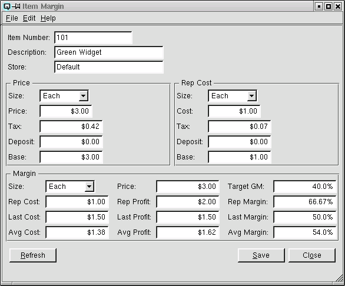
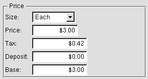
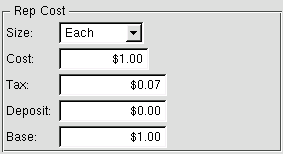
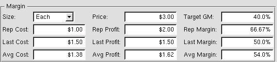

Item Margin

The item margin screen can be used to view the item margin, and/or
to change the regular price of an item based on the vendors
replacement cost, the last landed cost (which includes charges such as
freight) or the average cost of your current inventory of the
item.
Item Number
Enter the item number to view.
Description
The description of the item to view.
Store
If the price is valid only in a specific store, enter that
store.
Price

This section displays the specific information about the current
price of the item. The current price of the item may be changed as
required.
-
- Size - Select the size of the item to view.
- Price - You can view or edit the price for the item size.
- Tax - Displays the total tax that will be calculated on
the item size.
- Deposit - Displays the total bottle deposit amount for the
item size.
- Base - Displays the selling price for the item size
exclusive of bottle deposits and taxes.
Rep Cost

This section displays information about the vendor replacement
cost for the item.
-
- Size - Select the size of the item to view.
- Cost - View or edit the replacement cost of the item.
- Tax - Displays the total tax that will be calculated on
the item size when purchasing the item.
- Deposit - Displays the total bottle deposit amount for the
item size.
- Base - Displays the base replacement cost for the item size
exclusive of bottle deposits and taxes.
Item Margin

This section displays information about the margin of a specific
item size. Using this section you can change the price of an item
based on the replacement cost, the average cost or the landed cost of
an item.
-
- Size - Select the size of the item to view.
- Price - View or edit the price of the item.
- Target GM - The target margin that has been set for the item.
- Rep Cost - Displays the replacement cost of the item. This
can be edited as required.
- Rep Profit - Displays the profit dollars available on the
item based on the replacement cost. By editing the the replacement
profit Quasar will re-calculate the selling price.
- Rep Margin - Displays the profit margin available on an
item based on the vendor replacement cost. By editing the replacement
margin Quasar will re-calculate the selling price.
- Last Cost - Displays the last landed cost of the item. This
is the last landed cost of the item (including charges such as freight).
- Last Profit - Displays the profit dollars available on the
item based on the last landed cost. By editing the the last
profit Quasar will re-calculate the selling price.
- Last Margin - Displays the profit margin available on an
item based on the last landed cost. By editing the last
margin Quasar will re-calculate the selling price.
- Avg Cost - Displays the average cost of your current
inventory of the item.
- Avg Profit - Displays the profit dollars available on the
item based on the average cost. By editing the the average
profit Quasar will re-calculate the selling price.
- Avg Margin - Displays the profit margin available on an
item based on the average cost. By editing the average
margin Quasar will re-calculate the selling price.
Save
Click on the save button to save your changes and update the price
of the item.